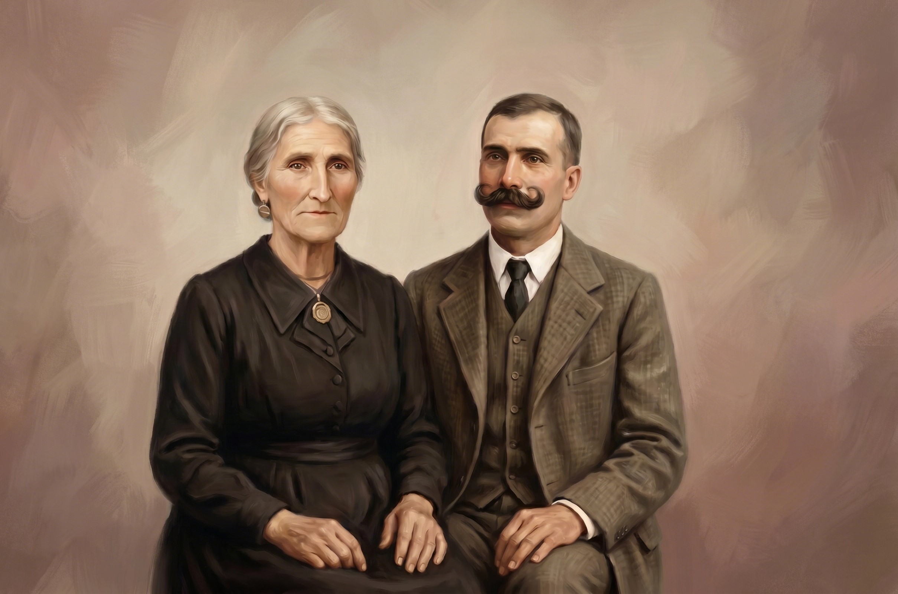

Descendência de Albino Martins Borges

Albino Martins Borges (1867 - 1943)
📍 Natural de Junqueira de Cima, Freguesia da Junqueira, Vale de Cambra.
📂 Ver Assento de Batismo / Óbito ➔

Maria Tavares da Silva (1871 - 1970)
📍 Natural de Vila Cova, Freguesia da Junqueira, Vale de Cambra.
📂 Ver Assento de Batismo / Óbito ➔
💍
Casamento de Albino & Maria (Casados em 1891)
📂 Ver Assento de Casamento ➔